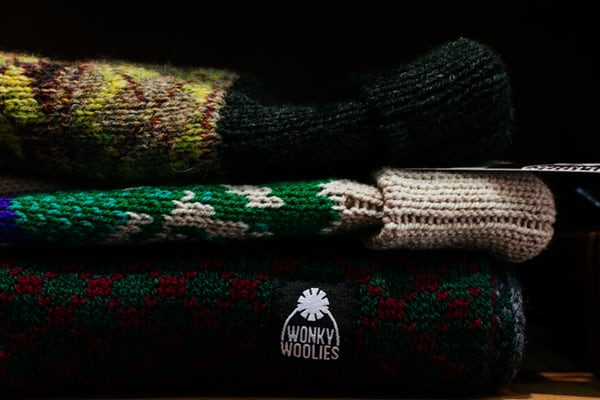
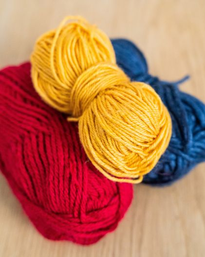

BINI cepures
Bini (angliski – beanie) cepure ir laika pārbaudījumu izturējis cepures modelis. Šī cepure ir pieguļoša, tā var būt ar atloku vai bez, kuru var rotāt dažādi raksti – ēnu raksti, pīnes, valnīša raksti, patentraksti vai žakards, kā arī vienkārši labiskais adījums. Mūsdienās šo cepuri valkā gan armijnieki, gan sportisti, gan augstās modes sekotāji. Tai nav vecuma ierobežojumu. Visi materiāli, ko izmantošu savos adīšanas darbos, tiks izmantoti no IrbeKnits meistarklašu arhīviem.
BINI cepuru veidi
Izšķir vairākus BINI cepures veidus:
- galvai pieguļoša cepure ar vai bez atloka;
- pagarinātā bini cepure;
- slouchy jeb nošļukusi bini cepure.
Izvēlētā dzija
Tā kā cepure ir mazizmēra izstrādājums un neprasa ļoti lielus dzijas ieguldījumus, tad iesaka izvēlēties maksimāli kvalitātīvu un dārgu dziju. Tikai jāatceraties, ka izteiksmīgāka dzija prasa mazāk rakstainu cepures daļu. Cepures var adīt gan no kašmira, gan angoras, gan citām luksus dzijām.
- Merino vai to kombinācijas ar citām šķiedrām.
- Krāsaino vilnu var izmantot bini cepurīšu žakarda adījumos.
- Mohēra vai cita pūkaina viegla dzija, piemēram, kašmirs, angora un to kombinācijas ar citām šķiedrām.
- Faktūrdzijas – buklē, tvīdu un citas.
Cepures adīšana
Uzmet valdziņus valnītim uz izvēlētajām adatām un sāk adīt valnīti izvēlētajā garumā. Noadot kādus 5-6 cm, pārbauda valnīša malas elastīgumu. Ja iespējams, labāk ir pielaikot. Kad valnītis noadīts vajadzīgajā augstumā, veic vajadzīgo valdziņu pieaudzēšanu, ja tas ir paredzēts. To dara sekojoši – pēc valnīša noada 1 rindu labiski un tad nākamajā rindā (kas arī ir labiskā) pieaudzē izklaidus vajadzīgo valdziņu skaitu. Vislabāk pieaudzēt, ieadot papildvaldziņus iepriekšējās rindas valdziņā. Tā ir visnemanāmākā metode. Nemanāma valdziņu pieaudzēšana Cepures pamatdaļu ada izvēlētajā cepures rakstā. Cepures augstums līdz noraukšanas brīdim ir atkarīgs no izvēlētās noraukšanas metodes. Vidēji cepures noraukšanas daļa sastāda 1/4 daļu no visa cepures garuma.
Cepures noraukšana
Cepuri var noraukt daudz dažādos veidos. Šeit tikai tos pieminēšu:
- noraukšana 4.simetriskās līnijās;
- izklaidus noraukšana;
- noraukšana atbilstoši rakstam;
- ķirbīštipa noraukšana;
- spirālveida noraukšana 5-7 līnijās;
- pudeļtipa noraukšana.